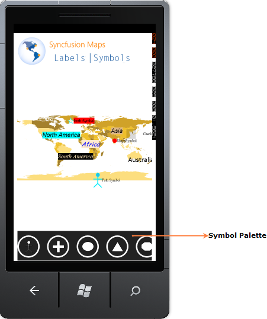

Essential Maps provides Symbol Palette supports to add symbol to the maps. Symbol text cannot be added when you add through Symbol Palette.

Figure 24: Symbol Palette
Properties Table
Table 11: SymbolPalette
|
Property |
Description |
Type |
Data Type |
Reference links |
|
SymbolPaletteItems |
Gets or sets the collection of the SymbolPaletteItem. |
Dependency property |
ObservableCollection* |
NA |
* ObservableCollection will accept only SymbolPaletteItem. And All SymbolPaletteItem will be avaible in the collection.
Table 12: SymbolPaletteItem
|
Property |
Description |
Type |
Data Type |
Reference links |
|
PaletteItem |
Gets or sets the content for the SymbolPaletteItem. |
Dependency property |
Object |
NA |
 Enabling Symbol Palette
Enabling Symbol Palette